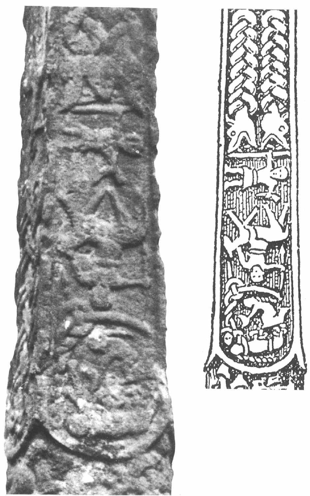

İskandinav mitlerinin en önemlilerinden biri, buraya kadar tanıtmış olduğumuz tanrılardan tamamen farklı kişilik özelliklerine sahip olan iki tanrıyı anlatmaktadır. Bu tanrılar Baldr ve Loki'dir. Baldr'ın adı İskandinav mitlerinde sıkça geçmesine rağmen, bu tanrı aslında pek fazla bilinmemektedir. Snorri onun beyaz tenli, mülayim, akıllı, tatlı dilli, merhametli olduğu kadar, Odin'in oğlu ve tanrıların en iyisi olduğunu da söylemektedir. Ama yine de nispeten silik bir tanrıdır. Oğlu Forsteti'nin bütün ihtilafların çözüme kavuşturulduğu büyük mahkeme salonu Glitnir'i yönetmesinden hareketle, Baldr'ın bir tür yasa tanrısı olduğu söylenebilir. Ama Snorri, babanın vereceği hükmün, ne olursa olsun geçerli sayılmayacağını da itiraf eder. Baldr bir çeşit savaş tanrısı da olsa gerektir, zira adı savaşta ölen savaşçılar için okunan dualarda yer alan kenninglerde anılmaktadır.
Loki'nin başından geçen maceralara önceki bölümlerde kısmen de olsa değindik. Loki yarı tanrı, yarı iblis olan karmaşık bir simadır. Þrymskviða şiirinde atılgan, hazırcevap, kurnaz ve Thor'u bir yandan kollayan, diğer yandan onunla dalga geçen bir şahsiyet olarak karşımıza çıkmaktadır. Asgard'ın etrafına savunma duvarı ören duvarcı ustası dev hakkındaki öyküde, verdiği kararlar her zaman akıllıca olmayan, hilebaz birisi olarak betimlenir.[S.87] İdunn'un elmalarıyla ilgili mitte ise tanrılara ihanet ettiği için onların katındaki konumunu ancak ölüm tehditlerine boyun eğerek kurtarabilen birisi olarak anlatılmaktadır. Loki, dünyanın sonunu getirecek olan savaşta, tanrılara karşı çarpışacak ordunun komutanlarından birisi olacaktır. Ayrıca, Heimdall'ın baş düşmanıdır. Snorri Loki'nin kişiliğindeki çelişkileri şöyle özetlemektedir:
Aesir tanrılarından sayılan ve kimileyin müfteri tanrı, hilebazların piri, bütün tanrıların ve insanların yüzkarası olarak nitelenen bir şahsiyettir. Ona genellikle Loki ya da Loptr da denir ve dev Farbauti'nin oğludur... Yakışıklıdır, göze hoş görünür fakat yaradılışı itibarıyla günahkâr ve kötü huyludur. Diğer tanrıların hepsini suya götürüp susuz getirebilecek kadar kurnazdır. Her konuda fesat düşünür. Aesir'in başını sıklıkla belaya sokar ve yine kurnaz tasarıları sayesinde onları bu belalardan kurtarır.
Snorri, bu satırlardan sonra, Loki'nin dişi bir dev olan Angrboda'dan doğma gayrı meşru çocuklarının adlarını sıralar. Angrboda uğursuz bir addır ve 'Keder Habercisi' anlamına gelir. Ondan doğan çocuklar ise şöyle sıralanır: kurt Fenrir, Dünya Yılanı Iormungard ve ölüler diyarının yöneticisi, tanrıça Hel. "Tanrılar bu üç yavrunun Iotunheim'da büyümekte olduğunun farkına varınca kehanetleri takip ettiler ve öğrendiler ki şimdilik yalnızca birer yavru olan bu canavarlar, gelecekte bir gün onların sonlarını hazırlayacak. Bütün tanrılar, annenin ve özellikle de babanın yaradılışından ötürü, bu canavarlardan büyük kötülükler beklemeleri gerektiğini anladılar." Böylece, Odin bu üç canavarı yakalamak için yollara düşer. Iormungard'ı yakalayıp okyanusun derinliklerine fırlatır. Böylece yılan, dünyanın sonuna dek, bu dünyayı kuşatan okyanusta yaşamak zorunda kalır. Hel'i hastalıktan ve ihtiyarlıktan ölenleri yanına alsın diye, yer altı dünyasına yollar. Fenrir'in başına ne geldiğini ise önceki bölümlerde görmüştük.[S.88]
Loki'nin karmaşık kişiliği birçok bilginin dikkatini çekmiştir. Kimileri bu sima hakkında engin bir kavrayışla yazmaktadırlar. Loki hakkındaki yakın tarihli yazıların belki de en önemlisi, birkaç Kafkas mitinde kendisinden söz edilen şeytani bir kişilik olan Syrond'da tanrı/şeytan melezi Loki'nin bir yansımasını gören ve ikisinin ortak bir kökene dayandığını ileri süren Georges Dumezil'e aittir. Eğer bu gerçekten de doğruysa, büyük tanrılarla çatışma halinde bulunan Loki tasarımının kökleri çok eskilere dayanıyor demektedir.
Baldr
Baldr hakkındaki mitleri ele almaya, Codex Regius'ta yer almayan ama MS AM 748 4° numaralı kısa bir Edda şiirleri derlemesi içerisinde karşımıza çıkan, 'Baldr'ın Rüyaları' anlamına gelen Baldrs daraumar ile başlamak uygun olacaktır. Bu şiir de kısa bir parça öykü ile başlayan bir soru cevap şiiridir.
Aesir tanrıları kurdular meclisi,
[Tanrıça] Asyniur da hazır bulundu aralarında.
Yüce güçler enine boyuna düşündüler,
Hayra alamet olmaya rüyaların Baldr'ı sıkmasını.
Odin bunun üzerine derhal harekete geçer. Atını eyerleyip ölüler ülkesine gider. Orada ölü bir kadın kâhini huzuruna çağırır ve ondan Baldr'ın rüyalarına bir açıklama getirmesini ister. Kâhin, bildiği her şeyi anlatır. Verdiği her bilginin ardından acı çektiğini belirterek, "kendi rızamın dışında konuştum. Artık susacağım" der. Ama Odin her seferinde onu sindirmeyi başarır. Zira sorularına şöyle başlamaktadır:[S.89]
Susma cadı! Soracağım yine de.
Daha fazlasını öğrenmeliyim, ta ki her şeyi bilene dek.
Böylece, diriltilmiş olan kadın kâhin, Odin'e soruşturmasında yardımcı olmayı sürdürür. Soru: Ölüler ülkesindeki bu hazırlıklar kimin için? Yanıt: Baldr'ın teşrif etmesini bekliyor herkes; onun şerefine bal şarabı mayalıyorlar. Soru: Baldr nasıl ölecek? Yanıt: Katili Hod olacak; Odin'in oğlunun canını o alacak. Soru: Peki bunun intikamını kim alacak? Yanıt:
Batı diyarlarında doğacak Rind'li Vali,
Henüz bir gecelik iken alacak intikamını Odin'in oğlunun,
Yıkamayacak ellerini, taramayacak saçlarını,
Baldr'ın katili odunların üzerine atılıp yakılana dek.
Lokasenna şiirinde yer alan bir dize, bu cinayette Loki'nin parmağı olduğunu açıkça ortaya koymaktadır. Loki, Odin'in karısı Frigg'in kendisine savurduğu tehdide böbürlenerek karşılık verir:
Şundan emin ol ki bir daha asla,
Göremeyeceksin Baldr'ı atının üzerinde evine dönerken.
Böylece, Loki ráðbani, yani 'cinayetin azmettiricisi' olmuştur; safdil Hod ise handbani, yani 'kiralık katil.'
Snorri, bu gibi imalı ifadeleri kullanmak suretiyle, hile ve düzenbazlığın öyküsünü yeniden oluşturur. Öykü, Loki'nin Baldr'a duyduğu sebepsiz düşmanlık ve kıskançlık ile başlar. Parlak tanrı hiç de hayra alamet olmayan rüyalar görmektedir; yakında öleceğini sezinlemektedir.
Tanrıların safında yer alan Frigg, bu felaketi önlemek için hiç vakit kaybetmeden harekete geçer. Bütün yaratıklara, "ateşe ve suya, demire ve her türden madene, kayalara, toprağa, ağaçlara, hastalıklara, hayvanlara, kuşlara, zehirlere ve yılanlara"[S.90] Baldr'a zarar vermeyeceklerine dair bir yemin ettirir. Hepsi yemin ederler. Böylece Baldr bir oyunun merkezi haline gelir. Baldr'a zarar verilemediğinden ötürür tanrılar onu bir hedef tahtası niyetine kullanırlar. Ona taşlar, oklar, mızraklar, kılıçlar ya da baltalar kullanarak saldırırlar ve böylece talim de yapmış olurlar. Hiçbir şey, onun kılına bile zarar verememektedir. Ama Loki bir kumpas kurar. Kılık değiştirip Frigg'e gider ve Baldr'a neden zarar verilemediğini sorar. Frigg ona, verdirdiği yeminden söz eder. Bunun üzerine Loki, ona zarar verebilecek herhangi bir şey olup olmadığını sorar. Frigg kazara sırrı ağzından kaçırır. "Valhalla'nın batısında, ökseotu denen uzunca bir bitki yetişmekte. Yeminini istemek için bana biraz fazla küçük görünmüştü" der. Loki derhal ağacı aramaya koyulur ve onu bulup yerinden sökerek tanrıların Baldr'ı hedef tahtası olarak kullandıkları oyun alanına gider. Kör tanrı Hod, hiçbir şey yapmadan bir kenarda durmaktadır. Loki onun yanına varır ve "Neden sen de Baldr'a atış yapmıyorsun?" diye sorar. Hod bu soruya "Birincisi, onu göremiyorum. İkincisi, atış yapacak silahım yok" diye yanıt verir. Loki, Baldr'a hiçbir şeyin zarar veremeyeceğini göstermenin ne kadar güzel bir şey olduğunu anlatarak, Hod'un aklını çeler. Ardından, "sana onun nerede durduğunu söyleyeceğim. Sen bu oku ona atmaya çalış" der. Hod, Loki'nin yönlendirmelerine kulak vererek atış yapar ve Baldr'ı vurup öldürür.
Bu olay tanrılar arasında büyük bir infial yaratır; hepsini büyük dehşet bir keder kaplar. Oyun, onların tartışma meclislerinde oynanmıştır; yani orası onlar için kutsal bir mekândır. Bu yüzden, Baldr'ın katilinin kim olduğunu çok iyi bilmelerine rağmen, onun intikamını orada alamazlar. Ağlamaktan konuşamayacak hale gelirler. Frigg, kadınca sezgileriyle hareket eder ve Baldr'ın Asgard'a geri dönmesine izin verilip verilemeyeceğini öğrenmek için Hel'e gidebilecek cesarete sahip korkusuz birisini arar. En sonunda, şanlı kahraman Hermod, bu tehlikeli yolculuğa çıkmayı kabul eder.[S.91] Odin'in atı olan Sleipnir'i ödünç alarak yola koyulur. Bu sırada tanrılar Baldr'ın cenazesini ölü yakma töreni için hazırlamaktadırlar.
Tanrılar, ölü yakma törenini, Baldr'ın gemisi olan Hringhorni'nin güvertesinde yapmayı tasarlarlar. Ama gemi kızağa çekilmiştir ve onu tekrar denize indiremezler. Bu sorunu çözmek için, Hyrokkin adındaki bir cadıyı yardıma çağırırlar. Cadı tek itişte gemiyi yüzdürmeyi başarır ve öyle hızlı iter ki kızaklar bir anda alev alır, bütün dünya sarsılır. Baldr'ın cenazesini güverteye taşırlar ve onun dul eşi Nanna da kederden ölür. Böylece, onu da eşiyle beraber ölülerin yakılacağı odunların üzerine koyarlar. Thor, tesadüfen oradan geçmekte olan bir cüceyi, uğur getirsin diye alevlerin içine tekmeler. Baldr'ın aralarında sihirli altın yüzük Draupnir'in de bulunduğu hazinleri de odunların üzerine yığılır.
Bu arada Hermod, bu dünyayı öbüründen ayıran Gioll ırmağına giden uzun ve karanlık yolu geçmektedir. O kadar hızlı gitmektedir ki, ırmağın üzerindeki köprüden geçerken, sanki beş alay ölü geçiyormuş gibi gürültü çıkar. Hel'in kapılarına geldiğinde, atını mahmuzlayıp kapıların üzerinden atlayarak içeri girer. Oradaki büyük salonda Baldr'ı bulur. Hermod, onun derhal serbest bırakılmasını ister. Seveninin çok olduğunu söyler. Ama Hel oldukça kuşkucu bir şahsiyettir. "Eğer dünyadaki her şey, yaşayan ve yaşamayan her şey, onun için gözyaşı dökerse, Baldr Aesir arasına geri dönebilir. Ama herhangi bir şey onun için gözyaşı dökmeyi reddederse ya da buna karşı çıkarsa, Baldr Hel'de kalacak" der.
Hermod, Hel'in mesajını tanrılara götürür. Tanrılar, Baldr için gözyaşı dökülmesini istemek için, dünyanın dört bir yanına elçiler gönderirler ve insanlar, yaratıklar, topraklar, kayalar, ağaçlar, bütün madenler, herkes ve her şey buna razı olur. Elçiler geri dönerlerken, adının Thokk olduğunu söyleyen dişi bir devin yaşadığı bir mağaraya gelirler.[S.92] Baldr'ın Hel'den kurtulabilmesi için, ondan gözyaşı dökmesini rica ederler. Ama dev, onlara şu sözlerle karşılık verir:
Kurudur, Thokk'un göz pınarları,
Baldr'ın ölü yakma töreninde.
Bırakın vermesin mülkünü Hel,
Ölü veya diri, adamın oğlunun bana hiç hayrı dokunmadı ki.
Snorri, "insanlar bu şahsın Aesir arasında en büyük kötülükleri yapmış olan Loki Laufeyiarson olduğu kanısındadırlar" diye ekler.
Bu mit kolayca tanınabilmektedir. Her ne kadar mitin bu hali özellikle İskandinav mitolojisinin ayırt edici özelliklerini yansıtıyor olsa da, benzer örnekleri diğer mitolojilerde de bulmak mümkündür. Kuşkusuz, 'yeniden dirilen tanrı miti' olarak da adlandırabilecek olan 'ölen tanrı' mitinden söz ediyorum. Bu mit, aslında Hıristiyanlığın da temelini oluşturmaktadır; ya da en azından İngiliz kilisesine mensup kimi piskoposlar onu yeniden yorumlamadan önce öyleydi denebilir. Osiris hakkındaki Mısır efsanesinde, Adonis hakkındaki Yakındoğu efsanesinde veya daha ziyade bir kahramanlık öyküsü olan Finli Lemminkainen destanında da bu miti bulmak mümkündür. Bunun bir ilk örnekten mi yoksa bir kültürün diğerleri üzerinde etkili olmasından mı kaynaklandığı hâlen tartışmalıdır.
Snorri'nin anlattığı öykü burada bitmez. Tanrılar Baldr'ın katilini öldüremeseler bile cezalandıracaklardır. Gerçekten de, tanrılar öylesine büyük bir hiddete kapılırlar ki, Loki, çareyi her duvarında bir kapısı olan ve her yönü gözetleyebileceği güvenli bir barakaya saklanmakta bulur. Gündüzleri kılık değiştirip barakanın yakınlarındaki bir şelalede bir alabalık olarak hayatını sürdürür. Kıyıya çıktığında ise Aesir tanrılarının kendisini nasıl tuzağa düşürebilecekleri konusunda kafa patlatıp çeşitli önlemler alır. Şelalenin yakınlarında yaşadığı dönemde balık ağının[S.93] yapılışını keşfeder ve yaptığı ağın nasıl işleyeceğini görebilmek için keten iplikten bir prototip yapar. Ağlar, o gün bugündür işte böyle yapılmaktadır.
Bir gün, Odin yine görkemli tahtı Hlidskialf üzerinde oturmaktadır. Etrafı izlerken Loki'nin yerini tespit eder ve diğer tanrılara onu bulabilmeleri için yol gösterir. Loki, tanrıların kendisini yakalamak için geldiklerini gördüğünde, elindeki ağı ateşe verir ve şelaleye sığınır. Balık ağı yanar gider ama küllerinin bıraktığı izler yine de onun ne işe yarayabileceğine ve nasıl yapılabileceğine ilişkin bir fikir vermektedir. Akıllı tanrı Kvasir bunu fark eder ve ne yapmak niyetinde olduğunu diğer tanrılara anlatır. Böylece, tanrılar ilkine benzer bir ağ yaparak Loki'yi yakalamak üzere suyun en hızlı aktığı yere giderler. Irmağı ağ ile tararlar fakat Loki tanrıların saldırısını iki kez usta manevralarla savuşturur. İlkinde çakıl taşlarıyla dolu nehir yatağına yakın yüzer, ikincisinde ise ağın üzerinde atlar. Ama üçüncü seferde ağın başında bu kez Thor nöbet tutmaktadır; Loki ağın üzerinden atladığında Thor onu yakalayıverir. Tanrılar, kaçmasın diye Loki'yi sımsıkı bağlarlar.
Onu, ilki omuzlarının altından, ikincisi belinin altından, üçüncüsü ise dizlerinin altından olmak üzere üç büyük kayaya bağlarlar. Rahatı bozulsun diye, bağlandığı yerin hemen üzerine çok zehirli bir yılan asmayı da ihmal etmezler. Böylece, yılanın zehiri eli kolu bağlı olan Loki'nin yüzüne damlar. Zehir her damladığında Loki şiddetle titremeye başlar ve bu titremeler yüzünden depremler meydana gelir. Fakat Loki, sadece sıkıca bağlanmış halde bir yerlerde yatmaktadır; elbette bir gün gelecek ve yazgısının çağrısına uyup dünyanın sonunun gelişini hızlandırmak için bağlandığı yerden kaçacaktır.
Baldr'ın öyküsü, Norveç ve İzlanda edebiyatlarında ima edildiği ya da anıştırıldığı kadarıyla işte böyledir. Daha doğuda, Danimarka'da ise bu mitin daha sade ve farklı biçimde anlatıldığı bir gelenek mevcuttur. Saxo Grammaticus, Gesta Danorum'unda bundan söz etmektedir[S.94]. Ama kendisini bir öykü anlatıcı olarak değil, tarihçi olarak görmüştür; bu yüzden, onun anlattığı öyküler tanrılar hakkında değil, daha ziyade krallar (ya da ekseriyetle yarı tanrılar ve diğer doğaüstü yaratıklar) hakkındadır. Saxo'nun anlattığı öykü, Hamlet öncesi Danimarka'da geçmektedir. Hotherus ve Balderus hem taht için hem de Hotherus'un babalığı Gevarus'un güzeller güzeli kızı, prenses Nanna için birbirleriyle çekişmektedirler. Hotherus, ne kadar yetenekli bir insan, usta bir atlet ve müzisyen olsa da, aslında sıradan bir ölümlüden fazlası değildir. Balderus'un soyu ise biraz kuşkuludur. Saxo, dokunaklı bir dille, onun Uppsalalı Othinus'un oğlu olmasından ötürü "Avrupa sathında sahte bir tanrısallık unvanı ile itibar gördüğünü" söylemektedir. Başka bir deyişle, Balderus aslında bir semideus, yani 'yarı tanrı'dır. Hotherus ile Nanna birbirlerine âşıktırlar. Ama Balderus günün birinde Nanna'yı banyo yaparken görür ve ona gönlünü kaptırır. O da iyi bir insandır; en azından o güne kadar öyle olmuştur.
Böylece, Hotherus ve Balderus arasında yaşanacak savaş için tüm koşullar sağlanmış olur: Uğrunda ölünebilecek güzeller güzeli bir kadın ve Danimarka krallıklarının yönetimi. Balderus tanrıların soyundan gelmiştir, oysa Hotherus birçok kez kendisini zafere götürecek işe yarar taktikler veren (sylvestress, virgines, nymphae ve 'orman perileri' gibi) doğaüstü güçlere sahip kadınlardan destek görmüştür. Hatta onlardan savaşta işine yarayacak zırhlı bir ceket bile almıştır.
Balderus'u çelikle yaralamak mümkün değildir. Bu yüzden, Hotherus onun kalın derisini delip geçecek özel bir kılıca ihtiyaç duyar. Bu kılıcı, buz düzlüklerinin ortasındaki bir mağarada yaşayan Mimingus adlı bir satyrus'tan alır. Ayrıca, sahibinin servetine servet katan sihirli bir bileklik de ele geçirir. Hotherus, bunlarla silahlanmış şekilde maceraya atılır. Bu sırada Balderus Nanna'ya yaklaşmanın bir yolunu bulur ve ondan karısı olmasını ister.[S.95] Ama Nanna bir ölümlü olarak bir tanrı ile evlenemeyeceğini söyleyip bu teklifi reddeder. Bu yüzden, Balderus aşk acısıyla yanıp kavrulmaya başlar.

Gosforth haçındaki figürler. Aşağıdakiler muhtemelen Loki ve karısını tasvir etmektedir. Loki bağlanmış durumdadır ve karısı üzerine damlayan zehirden onu korumaktadır. Bu, Baldr'ın ölümüne karşılık tanrıların intikamıdır.[S.96]
Hotherus, Balderus'un Nanna konusundaki ısrarına öfkelenir ve onunla savaşmak için bir filo kurar. Balderus, Othinus'un, Thor'un ve diğer sözümona tanrıların desteğini almış olmasına rağmen, Hotherus onu mağlup eder ve Balderus kaçmak zorunda kalır. Hotherus ise Nanna ile evlenir. Fakat aralarındaki rekabet yine de sona ermez. Balderus, günün birinde geri döner ve Hotherus'u bir dizi savaşta yener. Kedere boğulan Hotherus ormana kaçar ve bir süre oralarda dolaşır; günün birinde yine orman perileriyle karşılaşır. Verdikleri taktiklerin son yaptığı savaşlarda kendisine hiç zafer kazandıramadığından dem vurup onlara sitem eder. Orman perileri ona, sabırlı olmasını öğütlerler ve ilk iş olarak Balderus'a gücünü veren doğaüstü yiyeceği ondan çalmasını önerirler. Böylece onu hem meraklandırırlar hem de cesaretlendirirler. Cesareti yerine gelen Hotherus, Balderus'a tekrar saldırır. Pek çok hayatın kaybedildiği sonuçsuz ve kanlı bir savaş gününün akşamı, Hotherus düşman kampını gözetler. Kılık değiştirerek Balderus'un yiyeceğine mukayyet olan perileri takip edip yiyeceği nerede tuttuklarını bulur ve (görünüşe göre, metnin burası kayıptır) onun tadına bakmayı başarır. Üstelik bu arada savaşta kendisine zafer kazandıracak bir kemer de bulur.
Geri dönerken, yolda savaş sırasında sihirli kılıcı ile ağır yaraladığı Balderus'la karşılaşır. Balderus yiğitlik örneği sergileyerek ertesi gün savaşa sedye üzerinde devam eder. Ama yaraları çok ağırdır ve üç gün içinde bütün gücünü yitirip ölür. Yıllar sonra, Othinus'un, Ruthenia kralının kızı olan Rinda'dan Bous adlı bir oğlu olur. Bous, bir savaş sırasında karşı karşıya geldiği Hotherus'u öldürüp Balderus'un intikamını alır.
Baldr mitinin yukarıda anlattığım iki farklı halinin aynı kökten geldiğine hiç kuşku yoktur, zira ayrıntılara inildikçe çok fazla ortak öğeye sahip oldukları ortaya çıkmaktadır. Hem Snorri'nin hem de Saxo'nun metinlerinde mevcut olan ortak öğeler şunlardır: Baldr/Balderus ile Hod (Hoðr)/Hotherus adları; Nanna; Baldr'ın ancak özel bir silahla yaralanabilir olması;[S.97] Hod'un tanrı Baldr'ı öldürmesi; sihirli yüzük Draupnir. Snorri haricindeki Batı İskandinavya kaynaklarında ve Saxo'da, Baldr'ın intikamını alan kişinin annesi olarak Rind/Rinda adı geçer. Baldr saygı gören bir savaşçıdır. Bununla birlikte, iki gelenek arasında dağlar kadar fark olduğu da bir gerçektir. Saxo'nun anlattığı öyküye göre Nanna ile Balderus değil, Hotherus evlenir. Balderus, iyi niyetli ve masun kurban değil, saldırgan olanıdır. İntikamcının adı Vali değil, Bous'tur (itiraf etmeliyim ki, Baldrs draumar şiirinde bize bu bilgiyi veren dize, metinde bir düzeltme yapmayı zorunlu kılmaktadır). Ama bu mitin iki hali arasındaki temel fark, Saxo'nun anlattığı öyküde Loki'nin şeytani biçimde olayların gidişatına müdahale etmiyor oluşudur.
Loki
İskandinav mitinde anlatılan Loki, gerçekten de şeytanidir. Yok etme arzusuyla hareket eden ve tanrıların düşmanı olan bir simadır. Dünyanın düzenine son verecek savaş sırasında, bu düzeni yok etmek isteyen güçlerin safında yer alacaktır. Loki, doğal olarak, Hıristiyan mitlerindeki şeytan ile belli birtakım benzerlikler sergilemektedir. Bu yüzden, şeytan hakkındaki Hıristiyan mitleri, daha yakın dönem İskandinav bakış açısı üzerinde etkili olmuş olabilirler. Bu bakımdan Idunn'un devler tarafından kaçırılmasının anlatıldığı öyküde belki biraz oyunbozanlık yapıyor olsa da, içine düştüğü sıkıntılı durum onu öyle davranmaya zorlamıştır. Başka zamanlardaki davranışları ise şeytani olmaktan ziyade haylazcadır. Kimileyin önemli birtakım sonuçlar doğurabilen, fitne fücur işlerle uğraşır.
Snorri, Skáldskaparmál şiirinde "Altına niçin Sif'in Saçları denir?" diye sorar ve sorduğu soruyu yine kendisi yanıtlar.[S.98] Bir gün, Loki Sif'in saçlarını keser. Bunu -"düpedüz vandallığından" diye çevirebileceğim- til Iævísi yapar. Sif'in kocası Thor buna çok sinirlenir ve onun üzerine yürür. Köşeye sıkışan Loki, hemen son derece hünerli zanaatçılar olan cücelere gidip Sif için altın saçlar yaptıracağına söz verir. Bu saçlar, Sif'in kafa derisinden adeta ilk saçları gibi doğal yollarla çıkacaklardır. Böylece, Loki cücelere altın saç, bir gemi (Skidbladnir) ve bir de mızrak (Gungnir) ısmarlar. Loki, sonuçtan öylesine etkilenir ki, Eitri adında zanaatçı bir biraderi olan Brokk adlı cüceyle düşüncesizce -kellesini ortaya koyduğu- bir bahse tutuşur. Üzerine bahse girdikleri şeyse, Eitri'nin birbiriyle aynı güzellikte üç farklı şey yapamayacağıdır. Eitri hiç vakit kaybetmeden işe koyulur. Ocağa bir yaban domuzu postu koyar ve kardeşi Brokk'tan ocağın ateşini, kendisi dur diyene dek körüklemesini ister. Brokk ateşi körüklemeye başlar. Eitri'nin dışarı çıkmasıyla birlikte, içeri giren bir sinek Brokk'un koluna konar ve onu ısırmaya başlar. Brokk hiç oralı olmaz. Eitri geri dönüp ocağı açar ve içinden en karanlık geceleri dahi aydınlatabilecek parlaklıkta altından kılları olan bir yaban domuzu çıkarır. Ardından, Eitri ocağa bu kez bir külçe altın koyar ve kardeşi Brokk'un yine ateşi körükleme işiyle görevlendirir. Aynı sinek yine ortaya çıkar ve bu kez Brokk'u boynundan ısırır. Brokk ısırığa aldırmaz ve işine devam eder. Eitri geri dönüp ocaktan bu kez Draupnir denen altın bir yüzük çıkarır. Her dokuz gecede bir, bu yüzükten ağırlığınca sekiz yüzük daha peyda olur. Üçüncü kez işe koyulduğunda ise ocağa demir koyar. Bu kez sinek Brokk'u göz kapağından ısırır. Brokk, gözüne damlayan kanı silmek için ateşi körükleme işini bir anlığına boşlar. Eitri geri döndündüğünde, ona az kalsın işi berbat ediyordun diye çıkışır. Yine de, ocaktan ham demir değil, bir çekiç çıkarır. Sinek işe karıştığı için çekicin sapı çok kısa olmuştur. Ama çekiç, bu haliyle, hedefinden asla şaşmayan ve onu atan ele geri dönebilen ve sapının küçüklüğünden ötürü gömleğin cebine dahi sığabilen muhteşem bir silaha dönüşmüştür.[S.99] Snorri açıkça söylemez ama sineğin kılık değiştirmiş Loki olduğuna hiç kuşku yoktur.
Peki, bu durumda bahsi kimin kazandığına nasıl karar verilecektir? Odin, Thor ve Freyr hakemlik yapar. Loki, mızrağı Odin'e, altın saçları Thor'a, gemiyi ise Freyr'e verir. Ardından, sıra Brokk'a gelir. Brokk, yüzüğü Odin'e, yaban domuzunu Freyr'e, çekici ise Thor'a verir. Tanrılar, kendilerini devlerden koruyabilecek bir silah aradıkları için, çekicin bu hazinelerden en değerlisi olduğuna karar verirler. Loki bahsi kaybetmiştir, dolayısıyla kellesini de kaybetmesi gerekmektedir. Böylece, kendi hayatını satın almaya çalışır ama Brokk her seferinde "kesinlikle olmaz" der.
Loki bir yolunu bulup oradan kaçar. Ama Thor onu yakalayıp cücelere teslim eder. Brokk tam onun kellesini kesmeye hazırlarınken, kanunlara riayet etmeyi pek seven tanrının aklına birden ilham gelir: Kellesini kaybetse bile boynu yine ona kalacaktır. Bu yüzden Brokk, muhtemelen ilerde boşboğazın teki olmasın diye, onun kafasını kesmek yerine ağzını diker.
Snorri'nin de belirttiği gibi, bu öykünün İskandinav mitlerinin oluşturduğu ardışık dizi içerisinde anlaşılır hale gelen yapısal bir amacı vardır: Tanrıların büyük hazinelerinin nasıl ortaya çıktığını açıklamak. Bu öykünün nereye kadar Viking çağı mitlerinin özgün bir parçası olduğu bilinmemektedir. Öyküde Loki'nin herhangi bir tanrısal niteliği yoktur. Sahip olduğu tek doğaüstü nitelik, diğer yaratıkların kılığına girebilmesini sağlayan şekil değiştiriciliğidir; ama İskandinav mitlerinde bunu ölümlü insanlar bile yapabilmektedirler.
Snorri'nin Loki hakkında anlattığı öykülerden bir diğeri de Thor'un dev kral Utgard-Loki'nin sarayına yaptığı uzun ve maceralı yolculuk hakkındadır. Loki, bu öyküde, deyim yerindeyse daha mülayim bir haletiruhiyeye sahiptir. Aslında, Thor'un böylesi bir ziyaret için yola çıkmasının belirli bir sebebi yoktur. Yoldaşları ise Loki ve yolculuğa daha sonra dâhil olan[S.100] Thialfi'dir. Üç kafadar, Skrymir adındaki bir devle yaşadıkları beklenmedik bir maceranın ardından, Utgard-Loki'nin onları hilebazlığıyla aciz durumda bırakacağı sarayına varırlar. Utgard-Loki, kendi tutsakları ile farklı alanlarda yarışmaları için onlara meydan okur. Herkesten hızlı koşabildiği için, Thialfi atletizmi seçer. Ama yerel şampiyon Hugi onu kolayca alt eder. Zira Hugi aslında 'düşünce' demektir ve düşünce her şeyden hızlıdır. Thor, yarıştığı üç müsabakada da sonuncu olur. İlk olarak, boynuzdan su içme müsabakasına katılır. Boynuzun içindekileri içmeye çalışır, ama perişan halde başarısız olur. İlerde, o boynuzun bir ucunun denize çıktığını öğrenecektir. Boynuzdan aldığı yudumlar, deniz suyunun biraz çekilmesine sebep olmuştur ama hepsi o kadar. İkinci müsabaka ise biraz aptalcadır. Thor'un, Utgard-Loki'nin koca kedisini kaldırabilmesi gerekmektedir. Ama bunu bir türlü başaramaz, zira o hayvan aslında kedi kılığına girmiş Dünya Yılanı Iormungard'ın ta kendisidir. Iormungard o kadar uzundur ki, onu hiç kimse, hatta Thor tek başına bile kaldıramaz. Üçüncü müsabaka için Thor güreş tutmayı önerir. Dev, onunla alay edip güreşsin diye karşısına yaşlı bir kadın olan Elli'yi çıkarır. Kadın, Thor'un sırtını yere getirir, zira Elli nihayetinde en güçlü olanı bile devirecek olan 'ihtiyarlık' anlamına gelmektedir.
Loki ise bir yemek yeme müsabakasına katılır. Yemeği herkesten daha hızlı yiyeceğine dair bahse girer. Utgard-Loki, onun karşısına kim olduğu bilinmeyen Logi diye birini çıkarır. İki yarışmacı masaya otururlar ve ortalarına içi dolu, tahtadan bir et teknesi getirirler. Kurt gibi acıkmış olan iki rakip hemen yemeği yemeye koyulurlar. Teknenin kenarlarından başlayıp ortaya doğru ilerlerler ve ortada karşı karşıya gelirler. Loki tüm etleri, kemiklerine kadar yemiştir. Oysa Logi, etleri, kemikleri hatta et teknesinin bir bölümünü bile yemiştir. "Ve genel kanı, Loki'nin yarışmayı kaybetmiş olduğu yönündedir."[S.101] Tanrılar, daha sonraları, Logi'nin aslında doğadaki tüm öğelerin en doymak bilmezi olan 'ateş' anlamına geldiğini fark edeceklerdir.
Loki'nin bu yönü -bir tanrı gibi davranmayan eğlence düşkün kişiliği- elbette hesaba katılmalıdır ama ben onun daha karanlık ve güçlü olan yanının daha önemli olduğu kanısındayım. Ne yazık ki bu tanrının maceralarını anlatmış olan -ki bir zamanlar mutlaka vardılar- mitler hakkında bugün pek az şey biliyoruz. Bildiklerimiz ise çeşitlilik gösteriyor ve onun hakkında yalnızca bir taslak oluşturabilmemize izin veriyor. Sözgelimi, dünyanın sonu geldiğinde Loki ile gizemli tanrı Heimdall arasında hortlayacak kan davası ya da kavga hakkındaki öykülere yapılan göndermeler oldukça kafa karıştırıcıdır. Bu mit hakkında İzlandalı şair Ulf Uggason tarafından MS 1000 yılında kaleme alınmış olan Húsdrápa şiirinde önemli bir dize yer almaktadır. Snorri, Ulf'un bu şiirde söz konusu öykü hakkında pek çok şey yazmış olduğunu dile getirir, ama bize kalanların ne anlama geldiği tam bir muammadır:
Tanrıların şanlı muhafızı, hikmetiyle göze çarpan,
Gitmek için Singastein'a, çıktı yola Farbauti'nin kurnaz oğluyla.
Sekiz anadan doğduğu halde akillikte tek olan,
İşte, ilk o sahip oldu parlak hafnýra'ya.
Bu şiirde de yapılan göndermeleri yine dinleyicinin tespit etmesi gerekmektedir. Heimdall tanrılara giden yolların bekçisi, muhafızıdır. Dünyanın sonu geldiğinde düşman kuvvetlerin yaklaştığını bildirmek için borusunu üfleyecektir. Heimdall, tuhaf bir doğum olayıyla aynı zamanda sekiz anneye doğmuş olan kişidir. Farbauti'nin oğlu diye anılan kişi ise Loki'den başkası değildir. Böylece, her nasılsa Loki ve Heimdall birlikte Singastein'a hafnýra toplamaya giderler. Bu tuhaf bir sözcüktür,[S.102] kelimesi kelimesine çevirecek olursak, 'deniz böbreği'* gibi bir anlamı vardır ve buradan neyi ne olduğu tahmin edilebilir. Snorri Skáldskaparmál'da buna bir yanıt verir aslında. ''Heimdall... Singanstein'a gider. Bu onun Brisingamen için Loki ile dövüştüğü zamandı... Her ikisi de fok kılığına girmişti." Singanstein'ın okyanus ortasındaki kayalıklar olduğu aşikârdır. Tanrılar da bu yüzden fok kılığına girmişlerdir. Brisingamen'in ne olduğu ise gayet iyi bilinmektedir (ama 'deniz böbreği' ile ne ilgisinin olduğu konusunda en ufak bir fikrim dahi yok). Bu, bir ara Freyia'nın sahip olduğu meşhur ve fevkalade bir altın gerdanlıktır. Nispeten yakın tarihli bir metne göre, bu gerdanlık dört cüce tarafından yapılmıştır. Ona sahip olmayı çok isteyen tanrıça, sırayla dört cüceyle yatmış ve karşılığında gerdanlığı almıştır. Bu tam da Freyia'nın kalkışacağı türden bir davranıştır. Bu öykü hakkında bundan daha fazlasını bilmiyoruz. Tek bildiğimiz şey, dünyanın sonu yaklaştığında Loki'nin Heimdall'ı bulacağı ve bu ezeli düşmanların ölesiye çarpışacağıdır. [S.103]
* Midye (çev.)